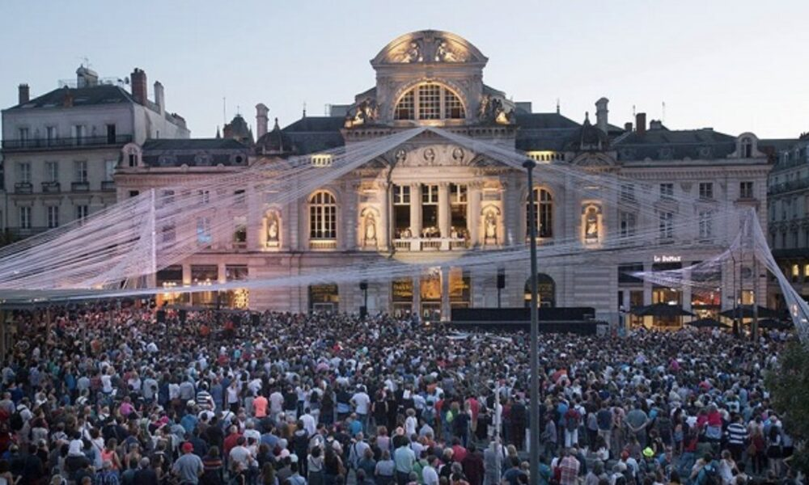

Les Accroche-Cœurs est le festival emblématique des arts de la rue d'Angers, organisé chaque année à la mi-septembre. Créé en 1999, cet événement entièrement gratuit rassemble des dizaines de milliers de spectateurs autour de spectacles de théâtre, de danse, de cirque et de concerts en plein cœur de la ville.
Pour cette édition 2026 placée sous le thème captivant du voyage, de l'évasion et de l'imaginaire, le festival déploie une quarantaine de compagnies et plus d'une centaine de représentations gratuites. Des rives de la Maine à la place du Ralliement, découvrez le décryptage complet des grands univers qui font vibrer la ville le temps d'un week-end prolongé.
C’est la marque de fabrique du festival : des spectacles monumentaux qui transforment l'architecture d'Angers en un décor de rêve. Cette année, le ciel angevin devient le terrain de jeu de compagnies de renommée internationale.
Le ton est donné dès l'ouverture sur la place du Ralliement avec Moon Music. Suspendus dans les airs, une danseuse et ses musiciens survolent la foule, mêlant poésie visuelle et prouesse technique.
Fidèle à sa réputation, le festival invite de gigantesques structures gonflables à s'emparer des rues. Avec Gulliver, voyage en absurdie (par les Plasticiens Volants), les spectateurs assistent à une déambulation colorée et démesurée. Plus poétique encore, La Baleine Céleste glisse majestueusement au-dessus de l'eau, reliant l'esplanade Cœur de Maine à La Rochefoucault.
Le spectacle Verne repousse les limites du show aérien en plongeant le public dans une fresque grandiose, oscillant entre la conquête du cosmos et la découverte des abysses marins.
L'essence même des Accroche-Cœurs réside dans la proximité entre les artistes et les passants. Ici, pas de barrières : le bitume devient une scène improvisée où l'humour, le mime et l'émotion se partagent à hauteur d'homme.
Sur l'esplanade Cœur de Maine, le spectacle Voyage réinvente la magie de rue en interagissant directement avec le public. À quelques pas de là, la pièce Crème de jour propose une satire théâtrale à la fois grinçante et intimiste sur les travers de notre quotidien.
Les quartiers de la Doutre et de Jean-Lurçat se transforment en refuges pour le jeune public. Entre contes merveilleux, la pièce L'Histoire de Madeleine Moineau et des manèges artisanaux et insolites, les familles disposent d'un espace entièrement adapté au rythme des plus petits.
Un festival sans musique n'est pas tout à fait une fête. Les Accroche-Cœurs font le pari d'une programmation éclectique et festive qui fait danser les places publiques du matin jusqu'au bout de la nuit.
Impossible de rater les batucadas de Los Percutos & Curupira. Leurs percussions brésiliennes, mâtinées de reggae et de funk, insufflent une énergie communicative à travers tout le centre-ville. Dans un autre registre, la puissante Fanfare du 6e Régiment du Génie surprend en revisitant de grands standards de jazz et de pop.
Le métissage musical est à l'honneur avec La Cafetera Roja, un collectif qui fusionne avec brio le rock, le hip-hop et les rythmes latinos. Pour les amateurs d'ambiances plus celtiques, le quatuor The Bards of Sweeney livre un set folk-rock énergique qui transporte le public directement dans l'ambiance des pubs irlandais.
Au-delà des représentations artistiques, le festival est un espace de vie, de rencontre et d'expression citoyenne où chacun est invité à devenir acteur de l'événement.
Véritable poumon gourmand du week-end, cet espace central permet aux festivaliers de reprendre des forces. Tenu par des associations locales, il met en avant le partage et la convivialité autour de produits de saison et de spécialités régionales.
Pour les plus téméraires, les mythiques Yamakasi animent le Parkour Park et l'Xtrem Jump Airbag. Les festivaliers peuvent s'essayer aux cascades urbaines et aux sauts dans le vide en toute sécurité.
Enfin, impossible d'évoquer l'esprit des Accroche-Cœurs sans mentionner sa tradition participative. Cette année, le mot d'ordre est de venir coiffé d'un chapeau ou d'un couvre-chef excentrique pour faire flotter un vent de folie douce sur toute la ville d'Angers.
| Date | Horaires | Ambiance et Spécificité |
|---|---|---|
| Vendredi 11 septembre 2026 | 19 h 00 – Minuit | Soirée de lancement, grands spectacles aériens et concerts. |
| Samedi 12 septembre 2026 | 11 h 00 – Minuit | Journée complète : déambulations, théâtre de rue et spectacles XXL. |
| Dimanche 13 septembre 2026 | 11 h 00 – 18 h 00 | Clôture festive, animations familiales et fanfares. |
| Accès libre et gratuit pour l'ensemble des spectacles | ||